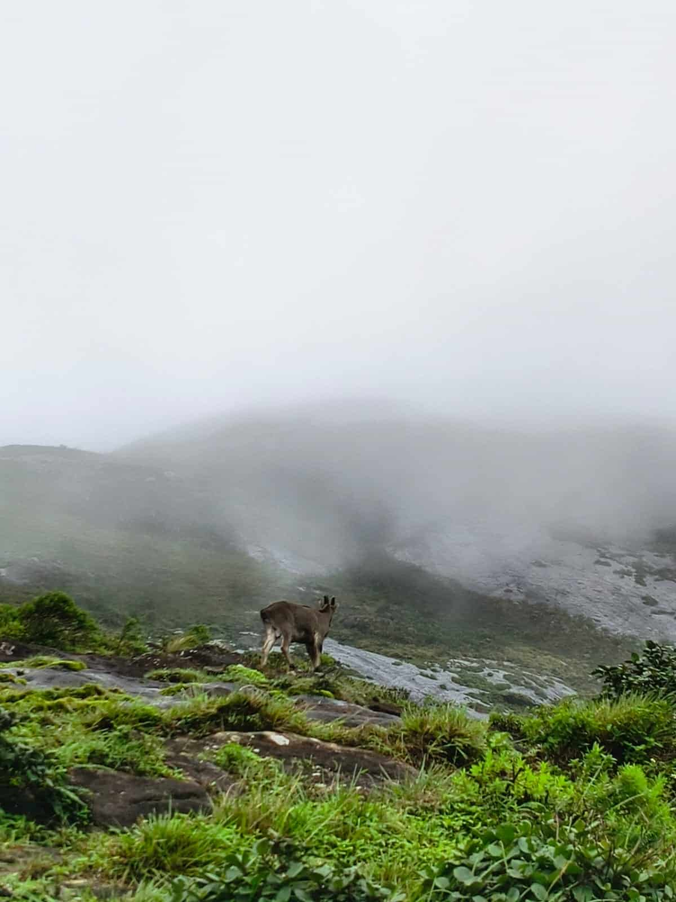
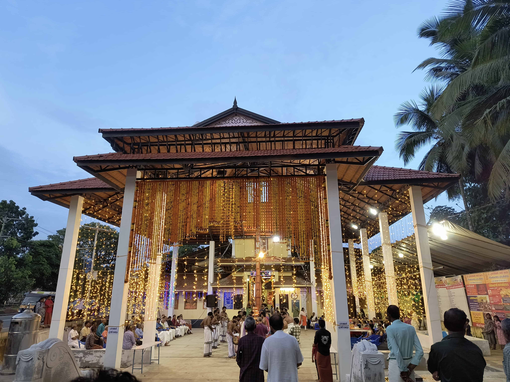
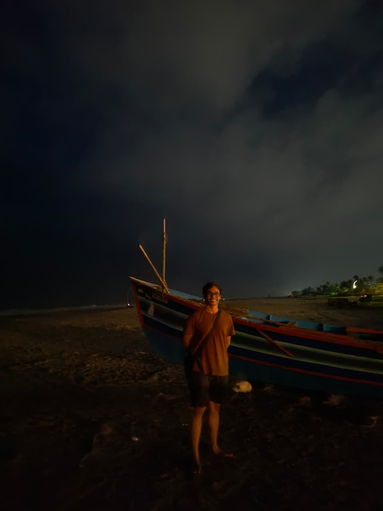
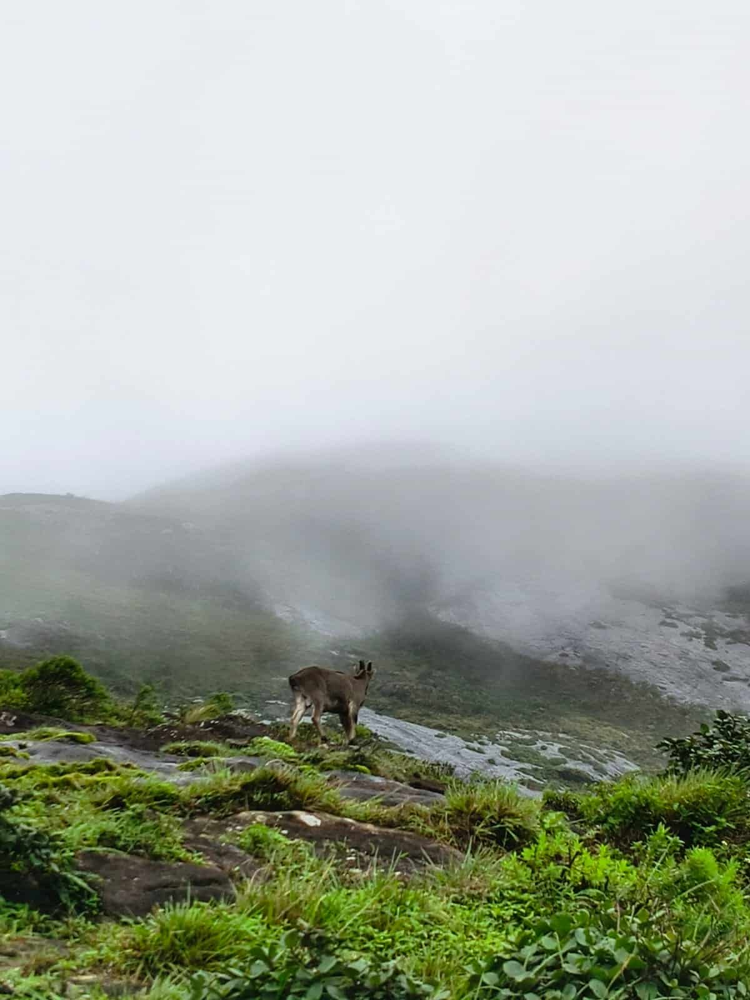
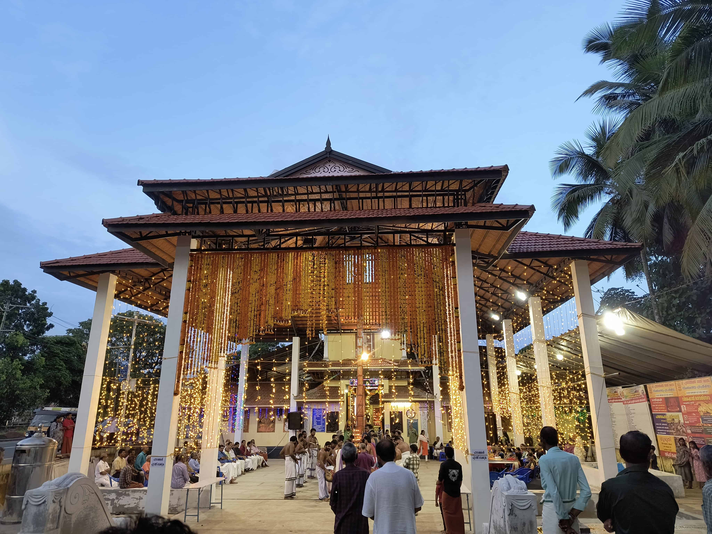
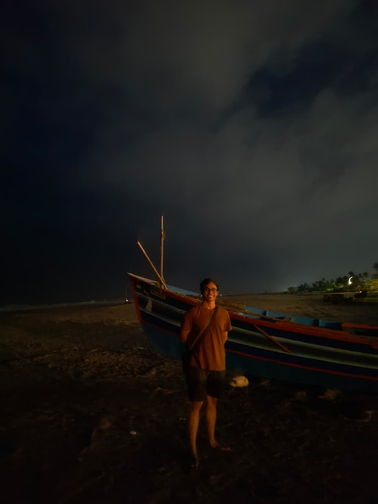

ADVENTURES & REFLECTIONS
Timestamps of some of the best moments of my life. This is where I share my perspective outside of core research.
Visiting the DOT!
October 2025 | Devesthal Optical Observatory, India
I had an incredible opportunity to visit the world class 3.6m Devesthal Optical Telescope. I honestly didn't realize how huge a 3.6m telescope is until I was standing right there. It gives you a new appreciation for the massive scale and the incredible precision engineering required to build and operate such a world-class facility.
Completing my Masters
July 2025 | IISER Thiruvananthapuram
Going to the place where I spent the best 2 years of my life filled me with joy as well as tears. The place transformed me into a person my younger self wanted to be.
 






A fun trip to Kerala
July 2025 | Kerala
Few months after completing the last semester of my Masters, I went onto one of the best trips of my life. The food, the culture, the place, one can only have appreciation for this state. Kerala will always be my second home.
My favourite workplace
Jan 2025 | HPC, IISER TVM
In my final year, I had a designated place for myself where I used to work on my Masters project. Having spent hours at this place, I enjoyed my every second. Soon I decorated it with some cool JWST images to keep me motivated whenever I used to think I am can't find answers to the cosmic mysteries.